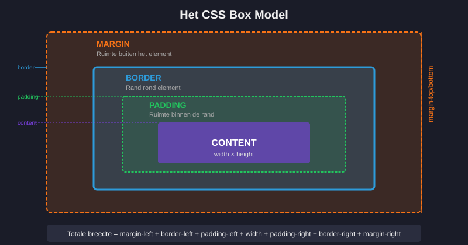
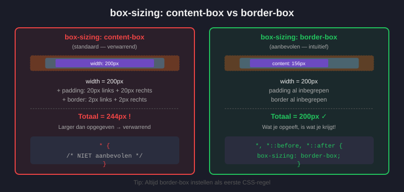
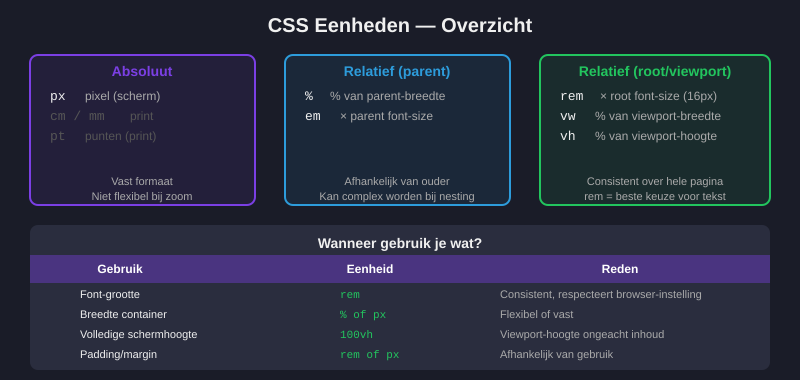
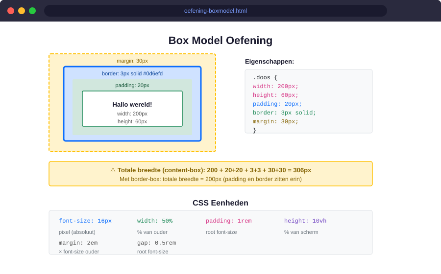
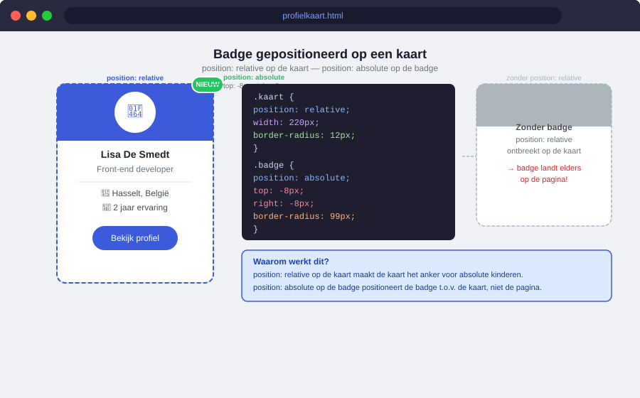

Box Model en CSS Eenheden
- Het CSS box model (content, padding, border, margin) uitleggen en visualiseren
- Het verschil tussen
box-sizing: content-boxenborder-boxverklaren - De totale afmetingen van een element berekenen
- Absolute en relatieve CSS-eenheden onderscheiden (px, %, em, rem, vw, vh)
- De juiste eenheid kiezen voor een bepaalde situatie
- Oefeningen met marges, opvulling en randen correct uitwerken
10.1 Het CSS Box Model
Elk HTML-element is in CSS een rechthoekig doosje. Dat doosje bestaat uit vier lagen, van binnen naar buiten:
- Content — de eigenlijke inhoud (tekst, afbeelding, …)
- Padding — ruimte binnen de rand (tussen inhoud en rand)
- Border — de zichtbare rand rond het element
- Margin — ruimte buiten de rand (afstand tot andere elementen)

.artikel {
/* Content */
width: 400px;
height: 200px;
/* Padding — ruimte rondom de inhoud */
padding: 20px; /* alle kanten gelijk */
padding: 10px 20px; /* boven/onder links/rechts */
padding: 10px 20px 15px 20px; /* top right bottom left */
/* Border — rand */
border: 2px solid #333;
border-radius: 8px; /* afgeronde hoeken */
/* Margin — ruimte buiten het element */
margin: 16px;
margin: 0 auto; /* horizontaal gecentreerd */
}Met de standaardinstellingen (box-sizing: content-box) telt CSS padding en border bij de opgegeven breedte op:
Totale breedte = width + padding-left + padding-right + border-left + border-right
Een element met width: 400px; padding: 20px; border: 2px solid is dus 444px breed.
10.2 box-sizing: border-box
Het gedrag van content-box is verwarrend voor beginners. Stel box-sizing: border-box in zodat width de totale breedte is inclusief padding en border:

/* Best practice: pas dit toe op alle elementen */
*, *::before, *::after {
box-sizing: border-box;
}
.kolom {
width: 50%;
padding: 16px;
border: 1px solid #ddd;
/* Totale breedte = precies 50% — geen surprises */
}Zet *, *::before, *::after { box-sizing: border-box; } altijd bovenaan je CSS-bestand. Dit is een universele reset die door vrijwel alle professionele webprojecten gebruikt wordt.
10.3 Afzonderlijke zijden instellen
Je hoeft niet alle kanten tegelijk in te stellen. Elke kant heeft een eigen eigenschap:
.element {
/* Padding per kant */
padding-top: 8px;
padding-right: 16px;
padding-bottom: 8px;
padding-left: 16px;
/* Verkorte notatie: top right bottom left (met de klok mee) */
padding: 8px 16px 8px 16px;
/* Nog korter als top=bottom en right=left: */
padding: 8px 16px;
/* Margin werkt hetzelfde */
margin-top: 24px;
margin-bottom: 24px;
margin-left: auto; /* auto centreert horizontaal */
margin-right: auto;
}10.4 CSS Eenheden
CSS heeft veel eenheden om afmetingen mee uit te drukken. We verdelen ze in absoluut en relatief.

Absolute eenheden
| Eenheid | Naam | Gebruik |
|---|---|---|
px | Pixel | Vaste afmetingen op scherm: borders, shadows, kleine spaties |
cm, mm | Centimeter, millimeter | Zelden — enkel voor print |
pt | Point (1/72 inch) | Zelden — legacy |
Relatieve eenheden
| Eenheid | Naam | Relatief aan | Gebruik |
|---|---|---|---|
% | Procent | Ouderelement | Breedte van kolommen, layout |
em | Em | Font-size van het element zelf | Padding, margin t.o.v. tekst |
rem | Root em | Font-size van <html> (standaard 16px) | Font-sizes, spacing — meest aanbevolen |
vw | Viewport width | 1% van de breedte van het browservenster | Brede secties, hero-elementen |
vh | Viewport height | 1% van de hoogte van het browservenster | Volledige schermhoogte |
/* Richtlijn voor welke eenheid wanneer */
/* Tekst: gebruik rem */
h1 { font-size: 2rem; } /* 32px als root = 16px */
p { font-size: 1rem; } /* 16px */
/* Spacing: gebruik rem of px */
section { padding: 3rem 0; } /* schaalbaar met tekst */
.card { padding: 16px; } /* vaste maat */
/* Layout / breedte: gebruik % of px */
.kolom { width: 50%; }
.zijbalk { width: 280px; }
/* Volledige schermhoogte */
.hero { min-height: 100vh; }
/* Border: altijd px */
.knop { border: 2px solid #333; }- Tekst: altijd
rem(schaalbaar, toegankelijk) - Borders & shadows:
px - Breedte van een kolom/container:
%ofpx - Padding rondom tekst:
remofem - Volledige schermhoogte:
100vh - Vermijd
emvoor font-size — cascadeprobleem bij geneste elementen
Oefeningen
Maak een bestand boxmodel.html met drie <div>-elementen. Geef elk een andere combinatie van padding, border en margin. Gebruik de DevTools (F12 → tab "Computed") om de totale breedte na te meten.
Bereken op papier eerst de verwachte totale breedte van elk element, daarna controleer je in de browser.
.doos-a {
width: 300px;
padding: 20px;
border: 5px solid navy;
margin: 10px;
/* Totale breedte = ? */
}
.doos-b {
width: 300px;
padding: 20px;
border: 5px solid navy;
margin: 10px;
box-sizing: border-box;
/* Totale breedte = ? */
}
Maak een profielkaart van 260px breed. Gebruik overal box-sizing: border-box. De kaart bevat een kleurrijke header, een avatar (emoji of afbeelding), naam, functie en een knop.
Gebruik minstens drie verschillende CSS-eenheden in je stijlen (bv. px voor de border, rem voor tekst, % voor de breedte van de knop).

Bouw een "Prijstabel" met drie kaarten naast elkaar (gebruik wat je al weet over layout, of gebruik display: inline-block). Elke kaart heeft:
- Een gekleurde header met de naam van het abonnement (Gratis, Pro, Business)
- Een prijs in grote letters (
font-size: 2.5rem) - Een lijst van 4 voordelen
- Een knop onderaan
Gebruik overal box-sizing: border-box en zorg dat alle kaarten exact even breed zijn (gebruik % of een vaste px-waarde).
Voeg daarna toe in de CSS: gap tussen de kaarten, padding in rem voor de kaartinhoud en margin: 0 auto om de hele tabel te centreren.
🟠 Kennischeck
1. Een element heeft width: 200px; padding: 20px; border: 5px solid met de standaard box-sizing. Hoe breed is het element in totaal?
2. Welke instelling zorgt ervoor dat width de totale breedte is inclusief padding en border?
3. Je schrijft font-size: 1.5rem. Waaraan is rem relatief?
4. Welke eenheid gebruik je best voor een sectie die altijd de volledige hoogte van het scherm inneemt?
5. Wat doet margin: 0 auto op een blok-element met een vaste breedte?